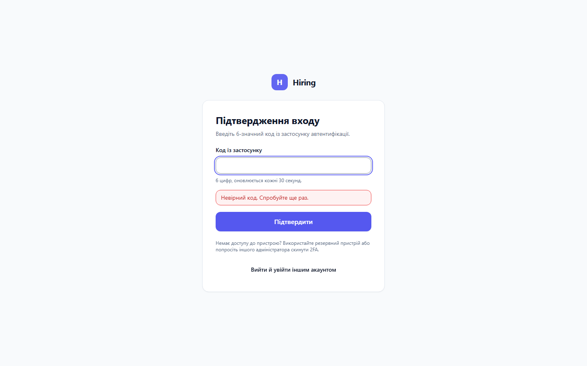

Hiring — фаза 1
Ролі: Тімлід, Адміністратор, Керівник рекрутингу, Рекрутер, Керівник HR, HR-менеджер, Фінансист; також сторінки без входу. Теми: світла й темна. Екрани: компʼютер 1440×900 і телефон 390×844; навігація — планшет 900×900 і телефон.
Ролі з доступом до вакансій після входу бачать «Вакансії» і «Профіль» (сторінку вакансій показано в галереї фази 2 ); Фінансист — лише «Профіль». Ролі з однаковим виглядом показано одним знімком, підпис називає, хто ще бачить так само.
Дані — демо-дані: ті самі люди, що й у демо-версії. Щоб знімки не змінювалися, час входів, сесії, дати в історії картки й дати створення вертикалей зафіксовано; журнал дій показує підготовлені записи з цими людьми. QR-код і ключ 2FA — зразки, справжній пристрій не створюється. Вертикаль «Дейтинг», порожній список вертикалей і дійсне запрошення — лише приклади станів. Сторінку 404 узято з галереї фундаменту .
Вхід і публічні сторінки (без входу): Вхід — форма входу; Вхід — посилання надіслано; Вхід — Google-акаунт не збігається із запрошенням; Вхід — не вдалося увійти через Google; Вхід — обліковий запис деактивовано; Вхід — з кнопкою «Увійти через Google» (коли вхід через Google увімкнено); Вхід — підтвердження за посиланням; Вхід — недійсне посилання; Запрошення — дійсне: імʼя, пошта, ролі й термін дії (приклад: Марина Савчук, HR-менеджер у двох вертикалях); Запрошення — з кнопкою «Прийняти через Google»; Запрошення — недійсне посилання; Сесію завершено; Сторінку не знайдено (404)Двофакторна автентифікація (2FA) (Тімлід, Адміністратор): 2FA — налаштування за бажанням (Тімлід: QR-код і ключ); 2FA — додати резервний пристрій (Адміністратор); 2FA — підтвердження входу кодом (Адміністратор); 2FA — невірний кодПрофіль (усі ролі): Профіль — Тімлід (Василь Мороз): одна вертикаль, у меню «Вакансії» і «Профіль». Так само бачать Керівник рекрутингу й Рекрутер; Профіль — Керівник HR (Наталія Кравченко): дві вертикалі й перемикач «Усі мої вертикалі». Так само бачить HR-менеджер; Профіль — Фінансист (Ірина Романенко): без вертикалей, вхід підтверджено кодом 2FA; Профіль — Адміністратор (Іван Коваленко): у меню ще «Налаштування»Налаштування без доступу (усі ролі, крім Адміністратора): Налаштування — «Сторінку не знайдено» в застосунку (приклад: Керівник рекрутингу; так само для всіх ролей, крім Адміністратора)Журнал дій (Адміністратор): Журнал дій — завантаження; Журнал дій — помилка з можливістю повторити; Журнал дій — записів не знайдено; Журнал дій — період довший за рік; Журнал дій — деталі у форматі JSON; Журнал дій — запис недоступний або відсутній; Журнал дій — усі записи за останні 7 днів; Журнал дій — деталі успішного запису; Журнал дій — деталі відмови з причиною; Журнал дій — пошук автора («Хто»); Журнал дій — вибрано кілька дій; Журнал дій — згрупований вибір дій; Журнал дій — входи та безпека; Журнал дій — «Показати новіші» після старіших записівНавігація (Адміністратор): Навігація — відкрите меню; Навігація — прямі посилання на телефоніКористувачі та ролі (Адміністратор): Користувачі та ролі — список; Користувачі та ролі — завантаження; Користувачі та ролі — помилка з можливістю повторити; Користувачі та ролі — нікого не знайдено; Користувачі та ролі — мобільні фільтри; Запросити користувача; Картка адміністратора — власну 2FA і доступ захищено; Картка користувача — недоступний або відсутній користувач; Скинути 2FA — підтвердження з обовʼязковою причиною; Скинути 2FA — частково виконано, можна повторити; Картка користувача — профіль і ролі; Картка користувача — історія; Прострочене запрошення — дії; Прострочене запрошення — підтвердження відкликання; Змінити email — меню «⋯»; Змінити email — діалог; Змінити email — адреса вже зайнята; Змінити ролі — матриця доступу; Змінити ролі — підтвердження зняття; Деактивувати — підтвердження з причиною; Деактивувати — блокування входу не завершено; Активувати знову — картка деактивованого користувача; Активувати знову — вибір попередніх ролейВертикалі (Адміністратор): Вертикалі — список (Гемблінг, Крипто); Вертикалі — нова вертикаль; Вертикалі — вертикаль з такою назвою вже існує; Вертикалі — перейменування: назва ще не змінилася; Вертикалі — порожній стан (приклад: вертикалей ще немає)Пріоритети тімлідів (Адміністратор): Пріоритети тімлідів — Гемблінг (Василь Мороз П0, Тарас Лисенко П1); Пріоритети тімлідів — рівні пріоритети та незбережена зміна; Пріоритети тімлідів — група «Без пріоритету»; Пріоритети тімлідів — зміни іншого адміністратора; Пріоритети тімлідів — вертикаль без тімлідів (приклад: «Дейтинг») Двофакторна автентифікація (2FA) · Тімлід, Адміністратор
2FA — налаштування за бажанням (Тімлід: QR-код і ключ)
2FA — додати резервний пристрій (Адміністратор)
2FA — невірний код 
Невірний код · компʼютер · світла Невірний код · компʼютер · темна Невірний код · телефон · світла Невірний код · телефон · темна Профіль · усі ролі
Профіль — Тімлід (Василь Мороз): одна вертикаль, у меню «Вакансії» і «Профіль». Так само бачать Керівник рекрутингу й Рекрутер Тімлід · компʼютер · світла Тімлід · компʼютер · темна Тімлід · телефон · світла Тімлід · телефон · темна Профіль — Керівник HR (Наталія Кравченко): дві вертикалі й перемикач «Усі мої вертикалі». Так само бачить HR-менеджер Керівник HR · компʼютер · світла Керівник HR · компʼютер · темна Керівник HR · телефон · світла Керівник HR · телефон · темна Профіль — Фінансист (Ірина Романенко): без вертикалей, вхід підтверджено кодом 2FA Фінансист · компʼютер · світла Фінансист · компʼютер · темна Фінансист · телефон · світла Фінансист · телефон · темна Профіль — Адміністратор (Іван Коваленко): у меню ще «Налаштування» Адміністратор · компʼютер · світла Адміністратор · компʼютер · темна Адміністратор · телефон · світла Адміністратор · телефон · темна Налаштування без доступу · усі ролі, крім Адміністратора
Налаштування — «Сторінку не знайдено» в застосунку (приклад: Керівник рекрутингу; так само для всіх ролей, крім Адміністратора) Компʼютер · світла Компʼютер · темна Телефон · світла Телефон · темна Навігація · Адміністратор
Навігація — відкрите меню Планшет · світла Планшет · темна Навігація — прямі посилання на телефоні Телефон · світла Телефон · темна Вертикалі · Адміністратор
Вертикалі — список (Гемблінг, Крипто) Список · компʼютер · світла Список · компʼютер · темна Список · телефон · світла Список · телефон · темна Вертикалі — нова вертикаль Нова · компʼютер · світла Нова · компʼютер · темна Нова · телефон · світла Нова · телефон · темна Вертикалі — вертикаль з такою назвою вже існує Назва зайнята · компʼютер · світла Назва зайнята · компʼютер · темна Назва зайнята · телефон · світла Назва зайнята · телефон · темна Вертикалі — перейменування: назва ще не змінилася Перейменування · компʼютер · світла Перейменування · компʼютер · темна Перейменування · телефон · світла Перейменування · телефон · темна Вертикалі — порожній стан (приклад: вертикалей ще немає) Порожньо · компʼютер · світла Порожньо · компʼютер · темна Порожньо · телефон · світла Порожньо · телефон · темна